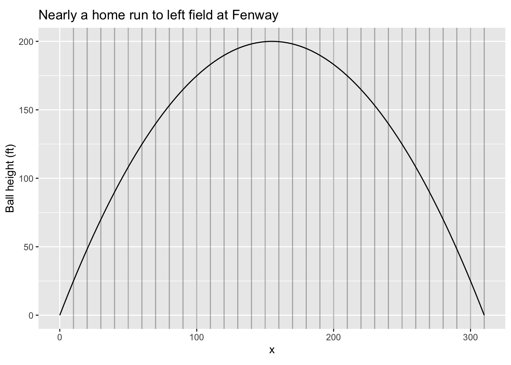

Famously, the trajectory of a batted ball has the shape of a parabola. A textbook problem in ball studies—sorry, “ballistics” is the accepted term—asks how long is the trajectory followed by a ball that travels a horizontal distance D and reaches a maximum height H. Knowing these things about the batted ball—parabola, D, H— is enough to write down the formula for the height of the ball when it passes over position \(x\) on the ground: \[y = \frac{4H x (D-x)}{D^2}\]
We didn’t ask you to derive the formula, in part because it’s only of theoretical interest and not the actual path of a ball in the sky. Nonetheless as a good modeler you should take it apart a bit. Is it a parabola? Is it dimensionally consistent? (\(x\), \(y\), \(D\), and \(H\) each have dimension L) Does it reach height \(H\) at the maximum? (Where is the argmax? What’s the value of the function at the argmax?)

So how long is the trajectory? This is equivalent to asking how long is the piece of string that would cover the graph of the trajectory. To answer this question from the formula, we do the usual thing of breaking up the problem into smaller bits: that’s what the vertical gray lines on the graph are doing. The distance between adjacent lines is \(dx\) (10 feet in the graph). Now we ask how long is the trajectory in each segment, then add the results together for all the segments.
Within each segment, the trajectory is very close to being a straight line. The run of the line is \(dx\), the rise is \(y'(x) dx\), where \(y'\) is just a concise way of writing \(\partial_x y(x)\). Using the Pythagorean theorem, the length of the line segment is \(\sqrt( y'^2 dx^2 + dx^2) = \sqrt{y'^2 + 1}dx\).
We can set up the problem algebraically, as we do in this paragraph, or on the computer, as in the sandbox. For algebra …Plug in the parabolic formula for \(y\), the length of each little \(ds\) of line segment given \[ds = \sqrt{16 \frac{H^2}{D^4}(D-x)^2 + 1}\cdot dx\] Accumulate the many little \(ds\) segments, we get \[S = \int_{\mbox{start}}^{\mbox{finish}} ds = \int_{\mbox{start}}^{\mbox{finish}} \sqrt{16 \frac{H^2}{D^4}(D-x)^2 + 1}\cdot dx\\ = \int_{x=0}^{x=D} \sqrt{16 \frac{H^2}{D^4}(D-x)^2 + 1}\cdot dx\] We call this “differential modeling” because we are constructing a model of the segment-length differential as a function of \(x\). Once we have the model, finding the total trajectory length is “just” a matter of calculating the anti-derivative and evaluating it at the endpoints.
y <- makeFun(4*H*x*(D-x)/D^2 ~ x, D=310, H=200)
dy <- D(y(x) ~ x)
ds <- makeFun(sqrt(dy(x)^2 + 1) ~ x)
DS <- antiD(ds(x) ~ x)
DS(310) - DS(0)It’s generally a good idea to check an algebraic solution with a numerical solution. Also, it’s a good professional practice to have a way of constructing a simple approximation to the answer. For instance, the trajectory in the graph is very roughly an upside-down V shape. The base of each segment in the V is 155 feet, the height is 200 feet, so the length of the two segments added together is \(2\sqrt{155^2 + 200^2} = 506.1\). We’d expect the length of the actual curve to be a bit longer than this, which it is.
Another approximation of the flight of a baseball corresponds better to what is observed visually:
y <- makeFun(H*sin(pi*(x/D)^2)^(0.5 + x/(2*D)) ~ x, D=310, H=200)